Префектура Сайтама · Титибу · сакэ, вино и поезд-ресторан
Титибу на вкус: день у виноделов и мастеров сакэ и ужин в поезде-ресторане «52 места счастья»
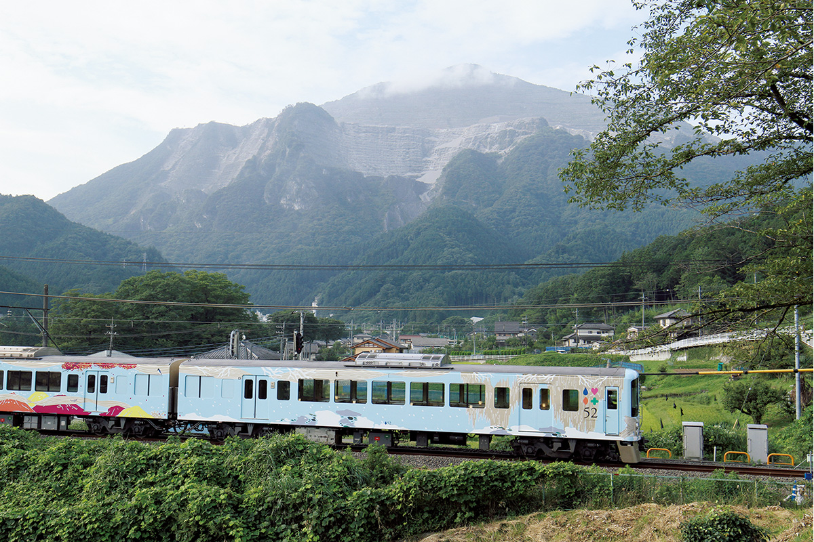
Титибу, горный край на западе префектуры Сайтама, славится чистой водой и вином, сакэ и виски, которые здесь делают. День можно провести у местных виноделов и мастеров сакэ, а вечером сесть за столик в поезде-ресторане «52 места счастья».
Поезд
Красная дорожка на станции Сэйбу-Титибу
Поезд-ресторан компании Seibu «52 места счастья» начал ходить в 2016 году и сразу стал событием. Это поездка на один день, но день совсем не будничный, и с годами слава поезда только росла. В 2026 году он по-прежнему в расписании и отмечает десятилетие.
Утром автор этого рассказа сел на токийской станции Икэбукуро в экспресс Red Arrow и приехал в Титибу с двумя целями. Первая: побывать там, где рождаются здешние напитки, ведь край богат природой и чистой водой. Вторая: превратить обычный выходной в праздник и поужинать в «52 местах счастья». В 17:30 он уже стоял на платформе станции Сэйбу-Титибу и ждал поезд с тем волнением, с каким ждут свидания.
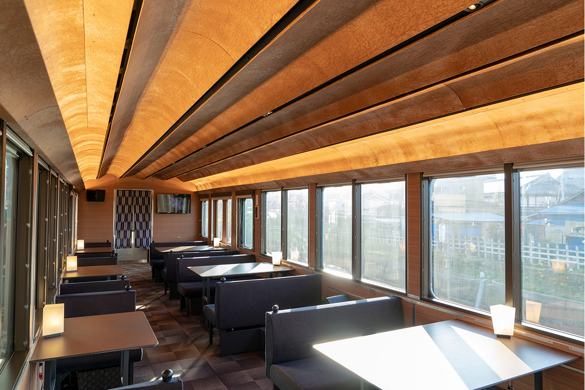
Отправление в 17:42. Когда начинается посадка, на платформе расстилают красную дорожку. Перегородки между вагонами завешены тканью титибу-мэйсэн, местным узорным шёлком, а сам салон спокойный и сдержанный. Его оформил архитектор Кэнго Кума. Основой стали четыре вагона серии 4000: потолок второго вагона отделан бумагой васи, пропитанной соком хурмы, а в четвёртом использовано дерево нисикава из лесов вдоль линии. Всё пространство выдержано в японском вкусе, строго и аккуратно.
За столиком уют чувствуется ещё сильнее. В меню напитков сакэ, вино и виски: позиций немного, но каждая выбрана со знанием дела. Есть и напитки тех мастеров, у которых автор побывал днём, так что подбирать пары к блюдам здесь отдельное удовольствие.
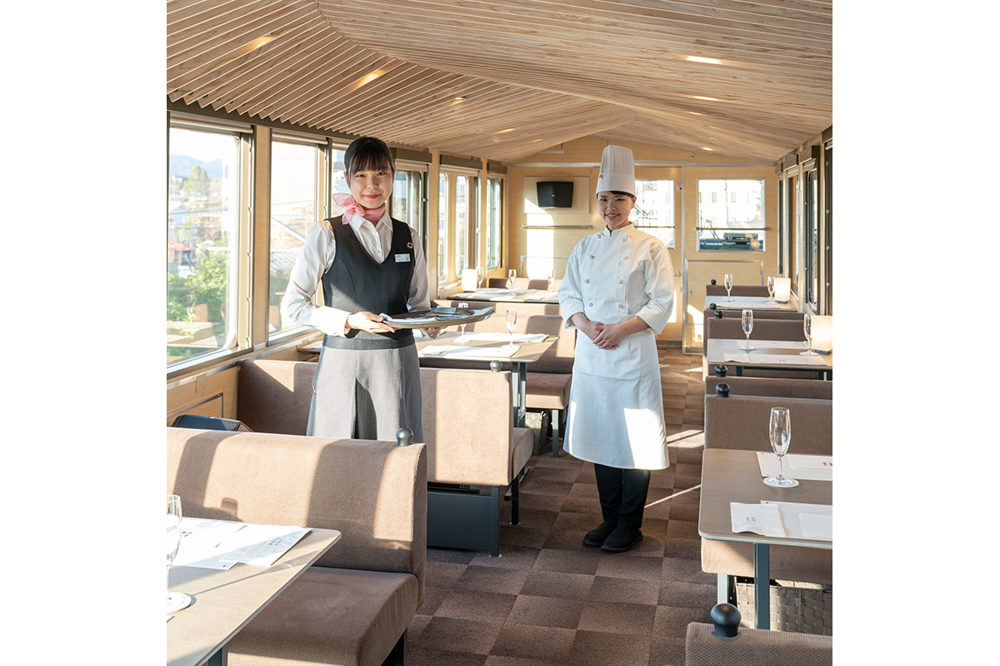
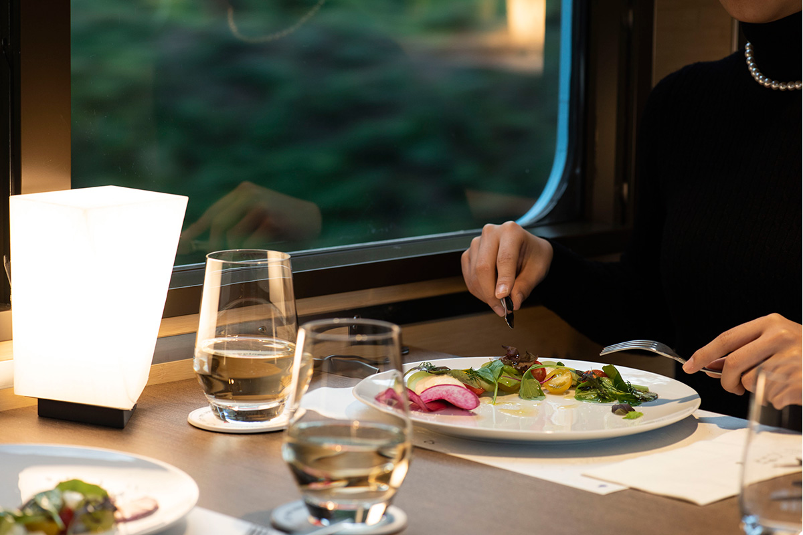
Тем временем поезд трогается, и стюардесса приносит приветственный напиток. Каждый вагон обслуживают около четырёх сотрудников: такое внимание возможно как раз потому, что мест всего 52. Остаётся смотреть в окно на уплывающие пейзажи и поднять бокал.
Днём
Где рождаются напитки Титибу
Округ Титибу будто создан для того, чтобы делать хорошие напитки. Мастера берут воду из бассейна реки Аракава и пользуются резкими перепадами температуры, и у каждого получается напиток со своим характером.
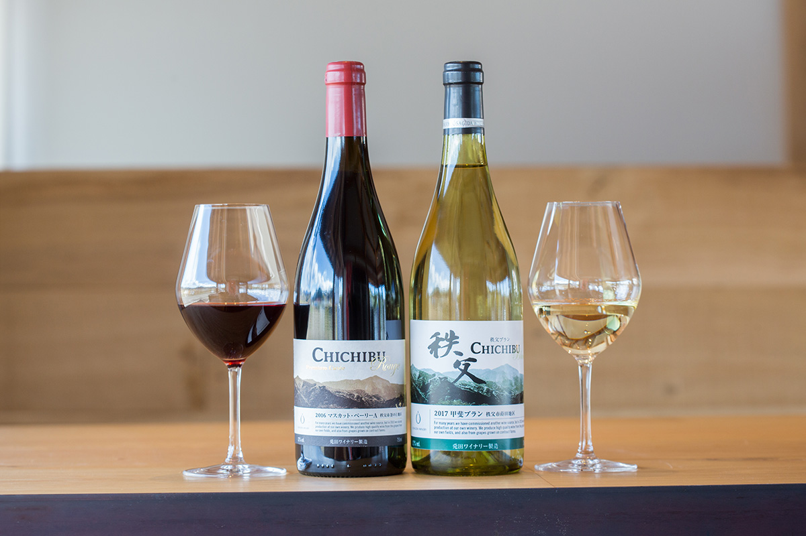
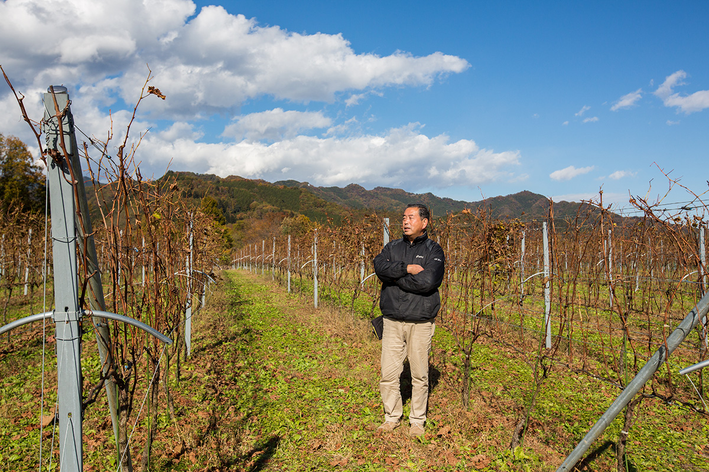
Первая остановка: Chichibu Farmers Factory с винодельней «Усагида». Здесь вино начинается с качества винограда. После прогулки по ферме и винодельне автор пообедал в ресторане при ней блюдами из продуктов Титибу.
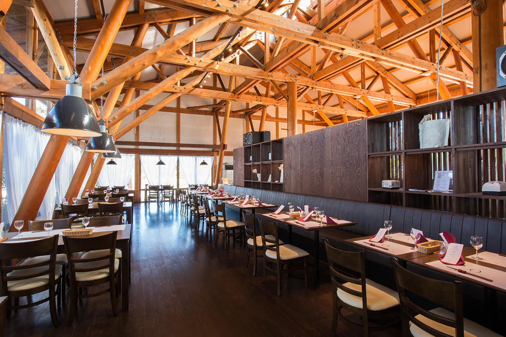
Chichibu Farmers Factory, винодельня «Усагида»
- Адрес
- префектура Сайтама, Титибу, Симо-Ёсида, 3720
- Телефон
- +81 494-26-7173
- Часы работы
- 10:00–17:00
- Выходные
- понедельник (если праздник, то вторник)
- Сайт
- chichibu-ff.com
Дальше путь лежит в «Сакэ-дзукури-но мори» («Лес, где делают сакэ») компании «Яо Хонтэн», которая выпускает сакэ «Титибу-нисики». На одной территории здесь стоят сакэварня, музей сакэ и лавка местных продуктов, так что время пролетает незаметно.
«Сакэ-дзукури-но мори» компании «Яо Хонтэн»
- Адрес
- префектура Сайтама, Титибу, Бэссё, 1432
- Телефон
- +81 494-22-8787
- Часы работы
- лавка 9:00–17:00, музей сакэ 9:00–16:30
- Выходные
- вторник (бывают изменения), новогодние дни
День заканчивается в сакэварне «Буко сюдзо», в 15 минутах ходьбы от станции Сэйбу-Титибу. Её сакэ почти не уезжает далеко: 95% выпивают в самом округе Титибу.
«Буко сюдзо»
- Адрес
- префектура Сайтама, Титибу, Миянокава-тё, 21-27
- Телефон
- +81 494-22-0046
- Часы работы
- 8:00–17:30
- Выходные
- 1 января
- Сайт
- bukou.co.jp
В горах Титибу работает и винокурня Venture Whisky, где делают виски Ichiro's Malt, известный любителям по всему миру. Экскурсий и продажи для публики там нет, но это ещё одна причина, почему напитки Титибу чем дальше, тем интереснее.
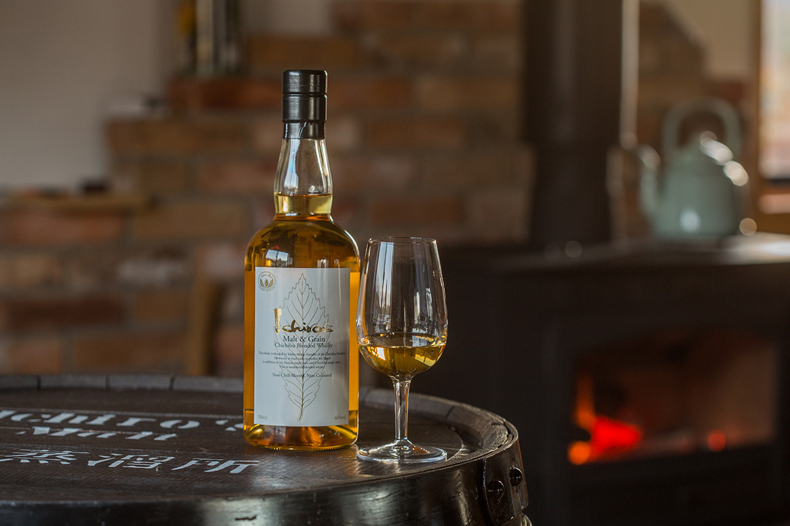
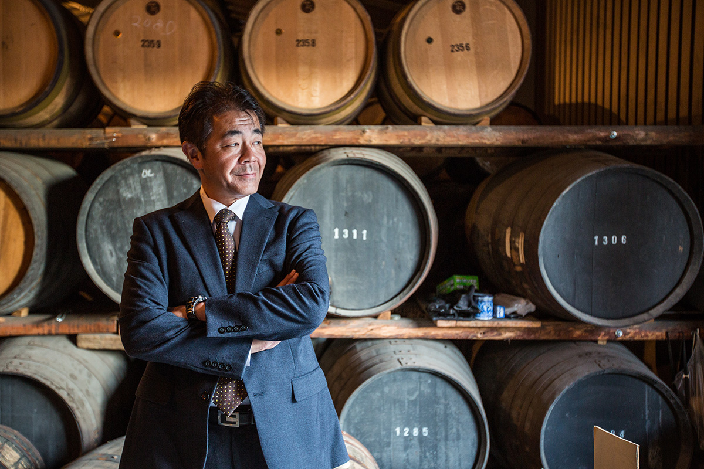
Ужин
Обратный путь за праздничным столом
Главная гордость «52 мест счастья», конечно, кухня.
В поезде два варианта: бранч и ужин. Оба курса составляют повара известных ресторанов, стоящих вдоль линий Seibu, из продуктов префектуры Сайтама и сезонных ингредиентов. Меню меняется каждые три месяца, и вместе с ним меняется шеф. Итальянская, французская, японская, китайская кухня: неудивительно, что многие возвращаются снова.
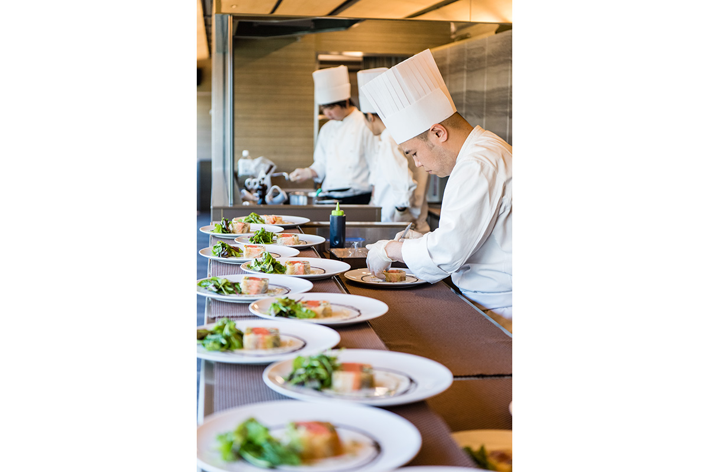
Третий вагон отдан под кухню: здесь стоят индукционные плиты и подогреватели для тарелок, поэтому каждое блюдо приходит к столу в лучшем виде. Если не знаете, что выпить к блюду, спросите стюардессу. Она подскажет, учитывая вкус блюда, продукты и характер напитка.
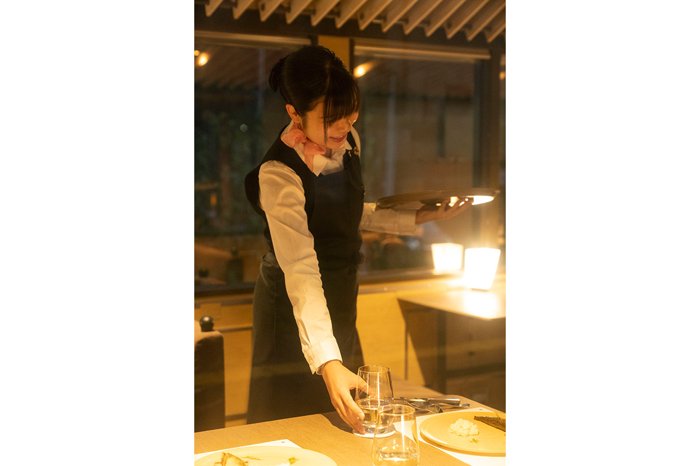
Когда дело доходит до основного блюда, по вагону разносится звук скрипки. Живая классическая музыка звучит прямо в поезде, а программа в разные дни своя, и это ещё одна приятная неожиданность. Еда, напитки, интерьер, внимание к гостям: всё здесь высокого уровня, и поездка в «52 местах счастья» запоминается как настоящий праздник.
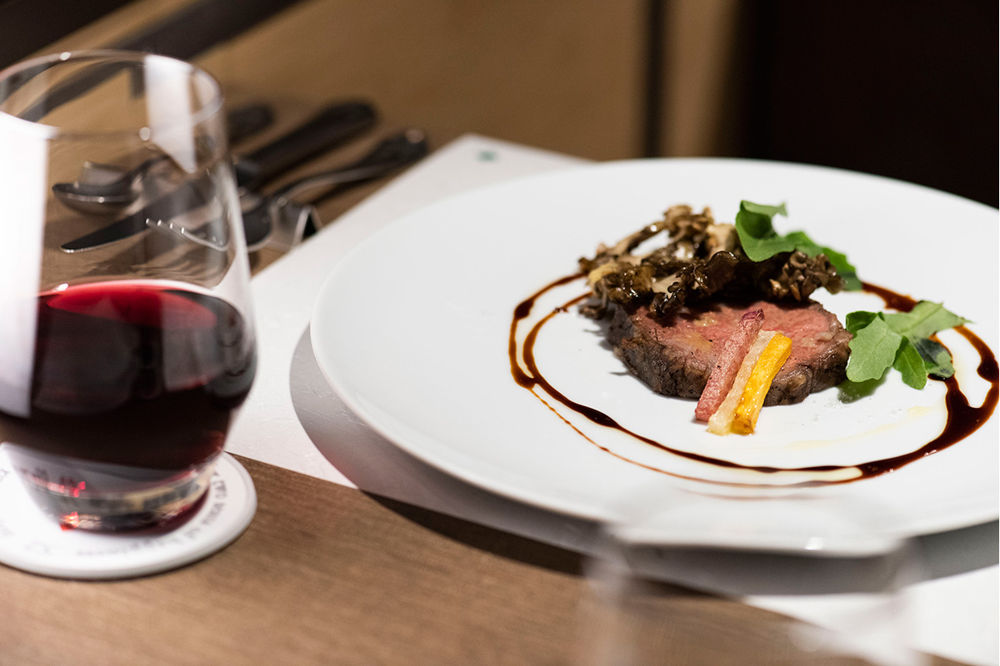
Поезд-ресторан Seibu «52 места счастья»
- Даты
- бранч и ужин в определённые дни; запись на месяц открывается во второй четверг месяца в 8:00 (по данным 2026 года)
- Как добраться
- в 2018 году ужин отправлялся со станции Сэйбу-Титибу в 17:42
- Телефон
- +81 570-005-712 (справочная Seibu, 9:00–17:00)
- Сайт
- seiburailway.jp
Фото: Ацуси Ямахира.